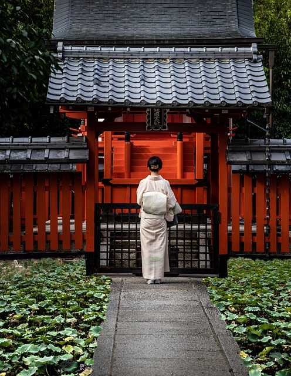
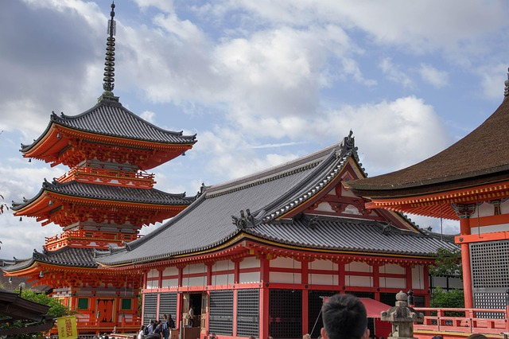
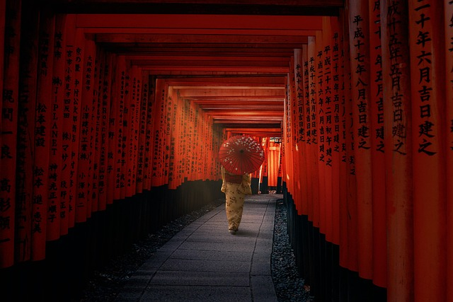
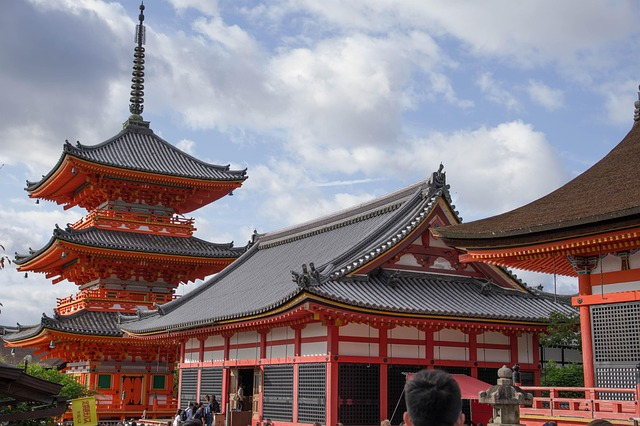
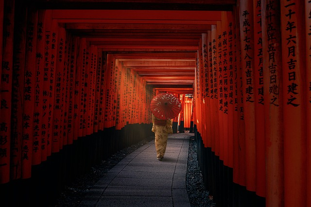
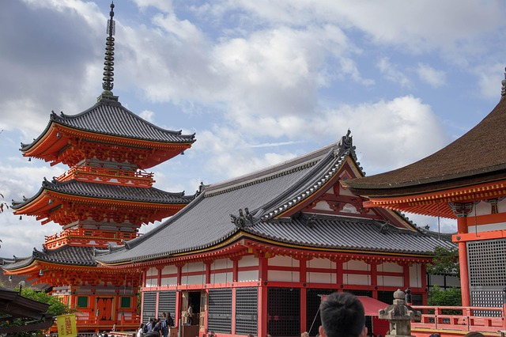
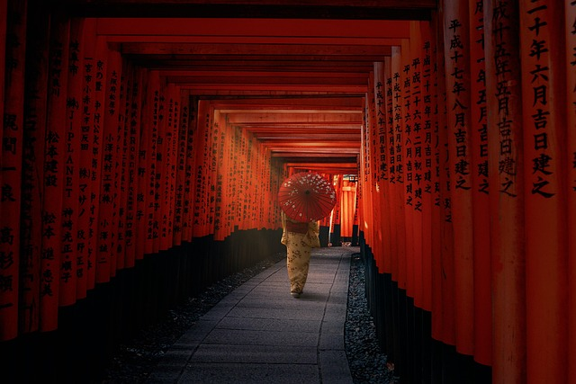
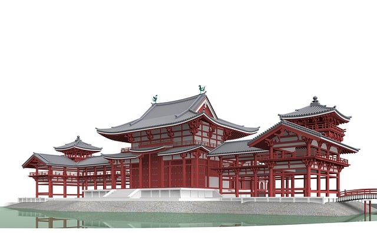
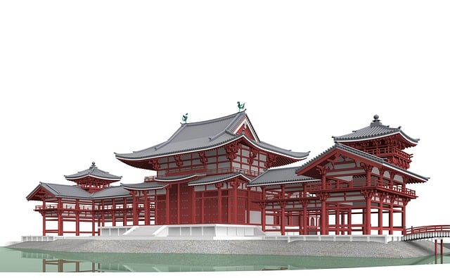
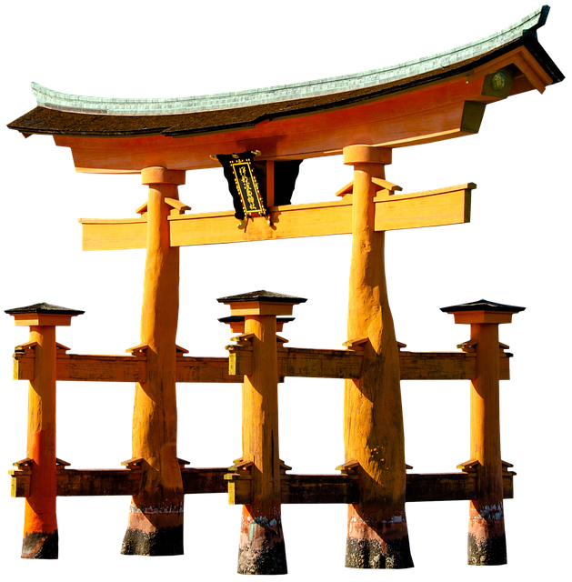

 





Shinto is the indigenous religion of Japan, focusing on the worship of
Kami, divine or spiritual manifestations in nature, ancestors, and
places. Believers believe that Kami are present in natural places such
as mountains, trees, waterfalls, and also in specific locations, and
that they influence the balance of the world. Rituals and festivals
serve to establish harmony between people, Kami, and the environment.
This is often achieved through purification, offerings, and music or
dance.
Temples (Jinja) and shrines are places of worship where visitors connect with the spiritual world through worship and purification rituals, prayers, and devotion. The architecture reflects the connection to nature and purity. Features include torii gates, simple, clean lines, natural materials such as wood and stone, and often spacious, tranquil courtyards. Typical characteristics include Taihei or Karamon roofs, small half-roofs, vibrant gardens, and the practice of ritual washing (Misogi) before praying.
The temple design invites feelings of stillness, respect, and gratitude, ensuring that Shinto remains a vibrant, everyday spirituality.
Temples (Jinja) and shrines are places of worship where visitors connect with the spiritual world through worship and purification rituals, prayers, and devotion. The architecture reflects the connection to nature and purity. Features include torii gates, simple, clean lines, natural materials such as wood and stone, and often spacious, tranquil courtyards. Typical characteristics include Taihei or Karamon roofs, small half-roofs, vibrant gardens, and the practice of ritual washing (Misogi) before praying.
The temple design invites feelings of stillness, respect, and gratitude, ensuring that Shinto remains a vibrant, everyday spirituality.
 

Buddhism arrived in Japan from South Asia and China in the 6th or 7th
century, initially via Korea. It was embraced by emperors, nobles, and
scholars, who valued it both as a spiritual doctrine and a cultural
enrichment. Initially, Chinese and Korean forms of Buddhism influenced
its development, including the Mahayana schools, and Chan/Zen Buddhism
later emerged. During the Nara period (8th century), Buddhism received
state support and was established with large temple complexes in
Heijo-kyo.
In the later Kyoto area, Zen Buddhism flourished, and other schools such as Tendai and Pure Land Buddhism spread and shaped daily religious life.
According to recent surveys, many Japanese people state that they do not belong to any organized religion (approximately 60–70%), while Shinto (approximately 3–20%) and Buddhism (approximately 30–40%) are considered culturally significant. In surveys, people often identify with both Shinto and Buddhism as family or ritual traditions without necessarily professing membership in an institutional religion.
In the later Kyoto area, Zen Buddhism flourished, and other schools such as Tendai and Pure Land Buddhism spread and shaped daily religious life.
According to recent surveys, many Japanese people state that they do not belong to any organized religion (approximately 60–70%), while Shinto (approximately 3–20%) and Buddhism (approximately 30–40%) are considered culturally significant. In surveys, people often identify with both Shinto and Buddhism as family or ritual traditions without necessarily professing membership in an institutional religion.



Shinto is a nature-based spiritual tradition of Japan that focuses on
Kami (deities of nature and ancestors) and rituals in daily life; there
is no central doctrine or founding story as in Buddhism. Buddhism is a
doctrine-based religious tradition originating in India; it emphasizes
teachings about suffering, karma, and enlightenment, various schools
(Mahayana, Theravada, Zen), and meditative practice.
In Japan, both are often practiced simultaneously. People visit Shinto shrines for ceremonies and Buddhist temples for rituals such as funerals. The two religions complement each other culturally. Their main differences are their origin and doctrine (Kami vs. karmic doctrine), goal (ritual/practice-oriented daily life vs. enlightenment and liberation), and organizational structure (family rituals and Shinto shrines vs. Buddhist temples and orders).
In Japan, both are often practiced simultaneously. People visit Shinto shrines for ceremonies and Buddhist temples for rituals such as funerals. The two religions complement each other culturally. Their main differences are their origin and doctrine (Kami vs. karmic doctrine), goal (ritual/practice-oriented daily life vs. enlightenment and liberation), and organizational structure (family rituals and Shinto shrines vs. Buddhist temples and orders).